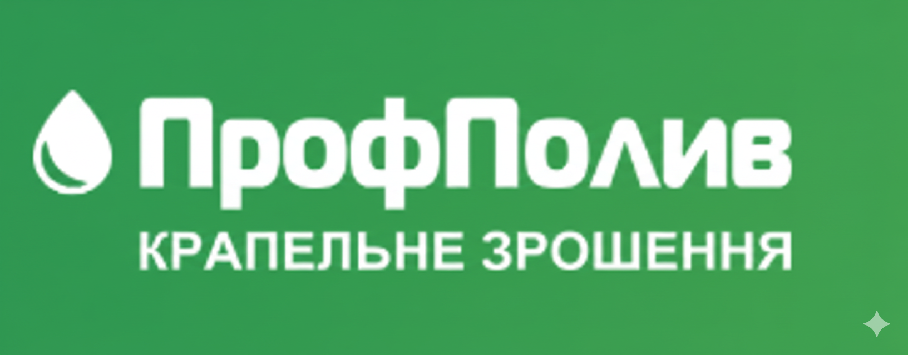
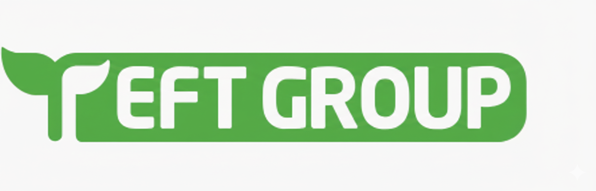
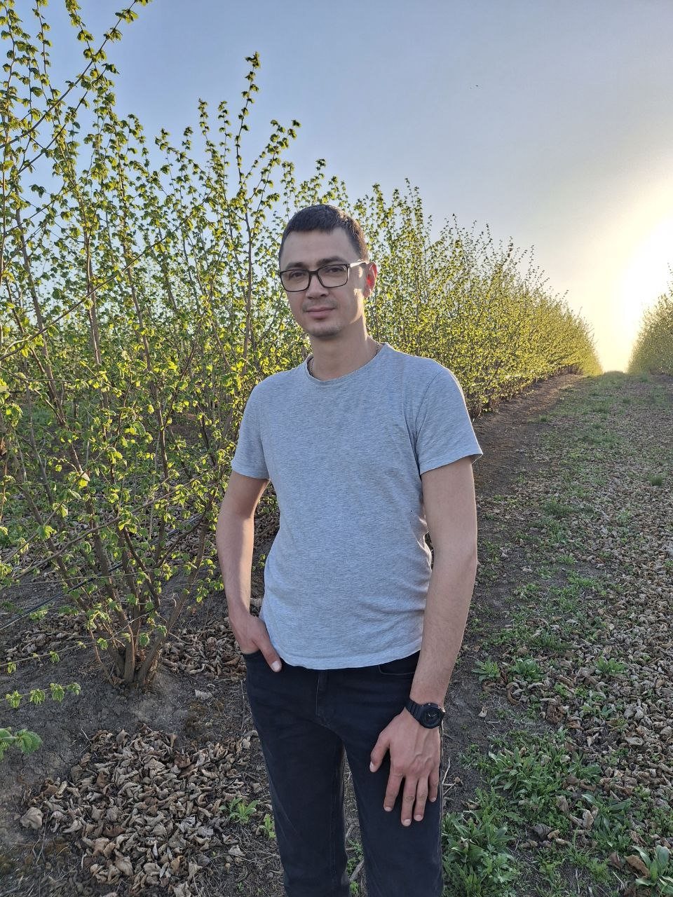

Наші партнери




Growing Intelligence. Технологія вашого успішного саду.
Вирощування ліщини — це не лотерея, а точний розрахунок.
Corylus Tech поєднує передову італійську генетику з українськими ґрунтами. Ми не просто садимо дерева — ми впроваджуємо технологічні карти, аналіз ґрунту та сучасні системи живлення для досягнення максимальної врожайності.
Ми не гадаємо на кавовій гущі — ми використовуємо дані. Моніторинг стану дерев дронами DJI, аналіз ґрунту та інтеграція штучного інтелекту дозволяють виявляти потреби рослин ще до появи видимих симптомів. Технологічність — це економія ресурсів та гарантія врожаю.
«Інвестиція в сад має спиратися на міцний монолітний фундамент — бездоганну генетику. Неякісний саджанець генерує збитки, тому ми обираємо єдиний правильний шлях: сертифіковані розплідники з бездоганною репутацією.
Ми гарантуємо 100% сортність та повну відсутність вірусних хвороб, фітоплазми чи бактеріозу. Тільки здоровий матеріал забезпечує максимальне запилення, вихід ядра понад 42% та прогнозований прибуток, а не боротьбу за виживання саду.»
Сучасний сад має бути автономним. Ми впроваджуємо рішення на базі сонячної енергетики для живлення систем поливу та фертигації. Це знижує собівартість кожного кілограма горіха та робить виробництво екологічно чистим.
Від присадибної ділянки до промислових садів площею 500 га. Євгеній Лайтер та команда Corylus Tech пропонують повний супровід: від аналізу ґрунту в Тетієві до налаштування логістики збуту. Ми знаємо, як перетворити землю на працюючий актив.
«Ми тримаємо руку на пульсі світового горіхівництва. У розділі Corylus Press ми збираємо, перекладаємо та аналізуємо найважливіші новини з Італії, США та Туреччини. Огляди нових сортів, інновації у боротьбі з хворобами, технології поливу та тренди ринку — вичавка найкориснішої інформації для українських фермерів.»
Ми допомагаємо дрібним та середнім фермерам вийти на великі контракти. Ви залишаєте дані про свій врожай, система автоматично сумує об'єми, формуючи товарні партії від 10-20 тонн, привабливі для великих оптовиків та експортерів.
Локація: Київська обл. | ФОП/Готівка
Локація: Одеська обл. | ТОВ
Оновлено: 21.02.2026

"Маючи досвід у реалізації масштабних проектів (закладка садів від 500 га), я розумію, що успіх криється в деталях. Corylus Tech — це мій погляд на сучасне горіхівництво: від правильного вибору саджанця до автоматизації збору врожаю."


Отримуйте свіжі аналітичні огляди та новини горіхівництва першими у нашому Telegram-каналі.
Слідкуйте у Telegram